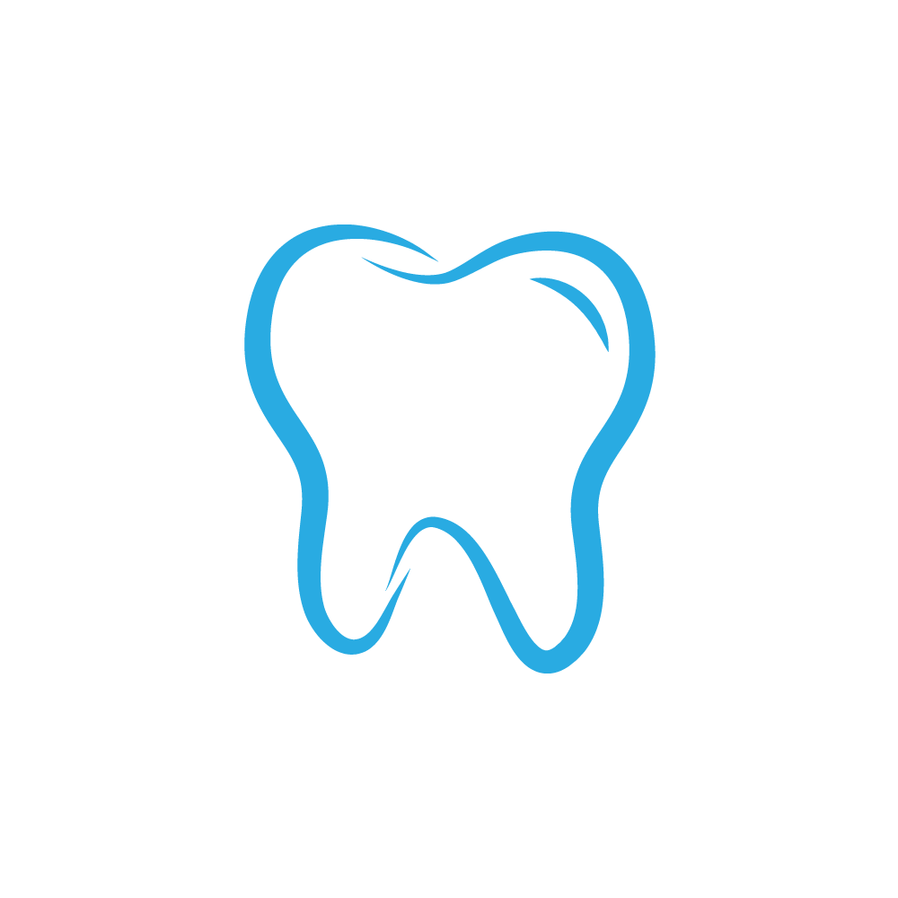

Fix And Removable Dentures
Fix And Removable Dentures are artificial teeth used to replace
missing teeth, either permanently fixed in the mouth or designed to be
removable.
Tooth Extraction
Tooth extraction is the procedure of removing a tooth from its socket
in the jawbone, usually due to damage, decay, or overcrowding.
Scaling
Scaling is a dental procedure that involves removing plaque, tartar,
and stains from the teeth surfaces, especially below the gum line, to
prevent gum disease.
R.C.T
(Root Canal Treatment) is a dental procedure used to treat infected or
damaged tooth pulp by cleaning, disinfecting, and sealing the inside
of the tooth to save it from extraction.
Dental X-Rays
Dental X-rays are diagnostic images used by dentists to view hidden
areas of teeth and gums, helping detect problems like cavities,
infections, and bone loss.
Diagnosis of Gum and Oral Disease
Diagnosis of gum and oral disease involves examining the mouth, gums,
and teeth—often with the help of X-rays and clinical tests—to identify
conditions like gingivitis, periodontitis, and oral infections.
Braces
Braces are orthodontic devices used to straighten and align teeth,
correct bite issues, and improve overall dental health and appearance
over time.
Filing
Filing, also known as dental filling, is a procedure where decayed or
damaged parts of a tooth are cleaned and filled with a dental material
to restore its shape and function